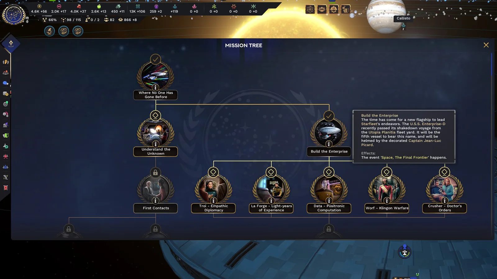
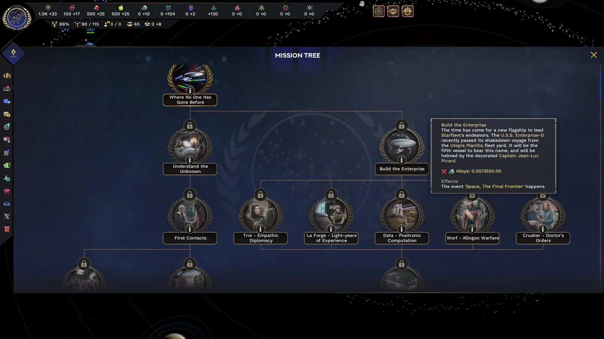
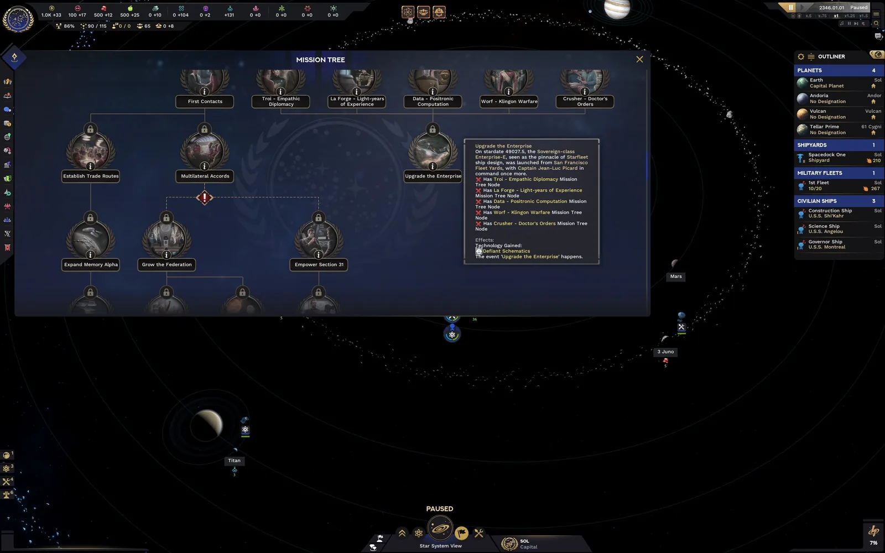

Star Trek: Infinite
Contributed to the development of systemic mechanics and narrative implementation to materialize the vast Star Trek lore into a Grand Strategy experience.
Design Dashboard
My core focus was translating complex Star Trek canon into engaging system design, branching mission trees, and achievement structures.
- Mission System Architecture: A deep branching tree system that anchors the narrative progression.
- Canon-to-Game Translation: Transforming iconic lore moments into empire-wide mechanics.
- System Ownership: End-to-end design for achievement and narrative event pipelines.

Mission Tree Design
The Mission Tree serves as the backbone of both narrative and strategic progression. I designed and documented this system to translate complex lore into clear, engaging objectives for each faction.
Design Scope
- Structured unique trees for Federation, Klingon, Romulan, and Cardassian empires.
- Created branching logic responding to diplomatic player decisions.
- Translated Star Trek canon into engaging gameplay milestones.
- Defined reward structures and empire modifiers to maintain gameplay pacing.
Impact on Gameplay
This system provides a narrative structure to the Grand Strategy genre, ensuring players have clear goals integrated within the Star Trek universe.



Narrative Events
Narrative Events inject dynamism and drama into the strategy. I contributed to the creation of both systemic and scripted events that challenge the player with consequential decisions.
Key Focus Areas
- Designed branching dialogue windows with long-term consequences.
- Adapted iconic lore moments like the Romulan supernova into interactive crises.
- Developed triggers for deep-space exploration storytelling.
Designing Consequences
Each event was designed for narrative value and systemic impact, fostering high replayability through meaningful choices.
Achievement System
I designed the full Achievement ecosystem to reward player mastery and motivate exploration of every facet of the game, from introductory steps to complex veteran feats.
Design Principles
- Owned documentation and logic for the complete achievement list.
- Structured tiers: Progression, Strategy, and Lore Mastery.
- Collaborated with tech teams for reliable state-based triggers.
Engagement Strategy
Achievements serve as an implicit guide, encouraging players to try risky playstyles, extending the game's lifespan.